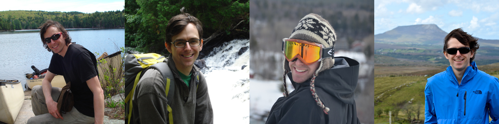

Hi there!
My name is Craig Bryan. I'm in my 4th year of software engineering at the University of Ottawa and I love it.
December 2015
That's when I'll graduate. If all goes according to plan.
Why are you reading this?
I'm currently searching the start of my professional career. I am interested in a 4-month position from May to September 2015, and for a full-time permanent position starting in January 2016.
Want the "SparkNotes" version?
About Me
I have a passion for learning! I'm constantly learning new skills, facts, technologies, and trivia. I also have a passion for software development. So, my favourite things to learn about are software-adjacent. Most recently I've taken to learning a little node.js by working through learnyounode, and I'm currently brushing up on my object oriented programming in Ruby by reading Sandi Metz's book, Practical Object-Oriented Design in Ruby. I'm also an avid reader of Hacker News, for both the technical reads and the start-up news.
I also like to consider myself a bit of an adventurer. I've travelled through mainland Central America, many parts of Europe, and a lot of Canadian wilderness: in the warmer seasons I love to get into Algonquin park for camping. More recently, I've become a regular jogger, and I supplement my running with squash and rock climbing.
I'm a gamer. I play video games in my free time, or, when the opportunity presents itself, one of the board games from my (oversized) collection.
Education
Dalhousie University
From 2007 to 2011, I studied and graduated from Dalhousie University with a BSc in Chemistry. I covered all of the classic sciences (biology, chemistry, physics) to some extent, but nearing the end of my degree I specialized in materials science. This specialization was mostly the result of working in a materials science laboratory for my honour's project under the supervision Dr. Mary Anne White.
In addition to the technical chemistry knowledge, I learned a lot of 'soft-skills'. In particular, I found that lab work, if it is to be done correctly and safely, requires a great deal of attention to detail. I also honed my communication skills, especially my writing skills, by writing research papers and lab reports on a regular basis.
During my career at Dalhousie University, I was fortunate to have the opportunity to participate in two published research papers. I am the primary author of the first, which is called Thermal conductivity of (Er1-xYx)2Ti2O7 pyrochlore oxide solid solutions, and is the result of my year of working in Dr. White's lab. The second, Bismuth Crystals: Preparation and Measurement of Thermal and Electrical Properties, was the result of a fun, crystal-growth experiment that I did in my first year at Dalhousie University.
University of Ottawa
After I graduated with my degree in chemistry, I focused on finding a job related to my field. After months of searching, I ended up as an IT technician for a television and consumer electronics store. This was a job that I was grateful for but not related to chemistry. At the same time, my interest in software development and programming had been growing. I decided I should be focusing on the field I enjoyed, so I headed back to school for Software Engineering.
I started at the University of Ottawa in September 2012, as a second year student. During the two years that I've spent here, I've learned a great deal of technical skills — languages, design patterns, frameworks, and tools — but I'm finding I learn the most working with fellow students. Collaborations improve my communication skills, my leadership abilities, and my empathy.
Projects and Experience
Developer for UmpleOnline
This past summer (May to August, 2014), I worked as a developer on an open source project called Umple. Umple is a tool that enables "Model-Oriented Programming". It is a project based primarily at the University of Ottawa and managed by Dr. Timothy Lethbridge.
My primary responsibilities working on Umple were the maintenance and improvement of UmpleOnline, the web-based demo and teaching tool for Umple. I worked with many different technologies over the summer. Early on, my work focused on javascript, CSS, and HTML as I squashed bugs and refactored sections of UmpleOnline. Certain bugs led me into the backend of UmpleOnline — which is in PHP — and the core of Umple — which is written in Umple that generates Java.
Later in the summer, I focused on making UmpleOnline easier to change: the large majority of the code associated with UmpleOnline were not backed by tests. I used a headless browser called PhantomJS along with ruby libaries Poltergeist (Ruby bindings for PhantomJS), Capybara (Ruby library for user-centric website automation), and rspec (Ruby testing framework). This was the most educational and fun part of my summer.
Engineer/DIY Hacker
From May 2013 to April 2014, I worked in the Pelling Lab for Dr. Andrew Pelling — a professor in the Department of Physics at the University of Ottawa. During this year I worked on implementing a project that would allow people in the DIY biology community to interact with Dr. Pelling's lab via Twitter. The idea for the project morphed from a biological sample monitor to a multi-sample, DIY microscope built from repurposed webcams. In this project, I was responsible for the design and implementation of both the software and the hardware.
The large majority of the software was written in Python, with some hardware-facing components written in Arduino (a domain specific language based on C). The software was responsible for receiving requests from Twitter, parsing and interpreting these requests, then interfacing with the hardware — motors, cameras, and sensors. The Twitter user would then have an image of the requested biological sample tweeted back at them.
I designed the hardware and built it using modular 3D-printed pieces. The overall design went through several iterations:

From a full-fledged incubator with a camera that moved in 3 dimensions built inside an old iMac,
to a device that only required camera movement in one direction, and used hand-focused biological samples,

to a device that used multiple stationary cameras with spring-loaded, hand-focused biological samples.
Hardware design was a very different experience. I made plenty of mistakes and learned a lot about managing projects to meet deadlines. The middle device was displayed as part of Toxicity, a bioart exhibit in Winnipeg, and was recently donated to the Canada Science and Technology Museum as part of their microscope collection.
Tech Support
In the year before I started my studies at the University of Ottawa, I worked at a consumer electronic store, Electronic Lifestyles, in my hometown of Orillia, Ontario. Here, I filled a lot of different shoes; I was a labourer, customer support, IT guy, and designer.
More than any other job I've had, I communicated and worked directly with customers. With this kind of experience, I learned how important it is for a product — any product — to work correctly and easily. Frustrated customers can be difficult, but they became easier to sympathize with as I dealt with more and more of their problems. I learned to approach every service call with a genuine concern and worry for the problems plaguing the customers.
At this job, I had many opportunities to work creatively. I redesigned and re-wrote the store's entire website. My boss, Greg Reid, had asked me to change some content on the website, and when I saw it, I knew it needed a facelift. I had no idea what I was doing — I was new at HTML, CSS, and web design in general — but I wanted to try. I am proud of the result, and it's laid the groundwork for me to become a better front-end developer today.
My Skills
When I made a list of my technical skills, I came up with a lot of languages and tools, but I quickly came to the realization that I am not familiar with all of these technologies to the same extent. I don't want to seem dishonest and place my strongest skills in the same list as the ones that I've used for a single class or project. I also don't want to sell myself short by only making a short list of what I consider my strongest areas. My solution to this dilemma is to use the following analogy: I've categorized all these languages into three categories.
My "Family" — I'm in contact with these folks almost every day and I know them very well, including their quirks.
My "Friends" — I see these people pretty often, and I enjoy spending time with them. They keep some secrets from me, and that's just fine.
My "Acquaintances" — I see these people around, and only have long conversations with them occasionally. Some of them are old friends with whom I've fallen out of touch, and others are those with whom I wish I could spend more time.
For fun, I've also thrown in a list of my current "Crushes" — those people whom I've seen from afar and would jump at the chance to get to know better.
Family
- Java
- HTML
- CSS
- Javascript
- jQuery
Friends
- Ruby
- Python
- git
- svn
- Capybara
- rspec
Acquaintances
- PHP
- Bash
- C++
- mercurial
- Ruby on Rails
- node.js
- Arduino
- ant
Crushes
- AngularJS
- Sass
- Objective-C
- Go
- Rust
- Cucumber
References

Dr. Timothy Lethbridge
Ph.D, P.Eng, I.S.P, C.S.D.P.
Primary maintainer of
Umple
+1 613 562 5800 x6685
tcl@site.uottawa.ca

Dr. Andrew Pelling
Ph.D, Physicist, Biologist, Artist
Proprietor of
the Pelling Lab
+1 613 562 5800 x6965
a@pellinglab.net

Greg Reid
Businessman, salesman, techie
Owner of
Electronic Lifestyles
+1 705 327 3942
electroniclifestyle@rogers.com